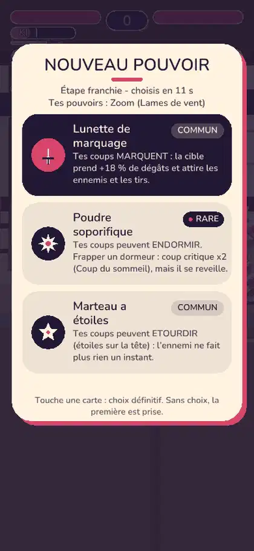
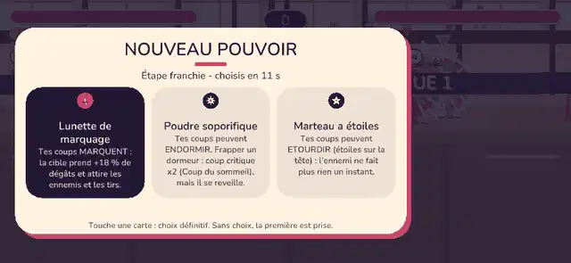
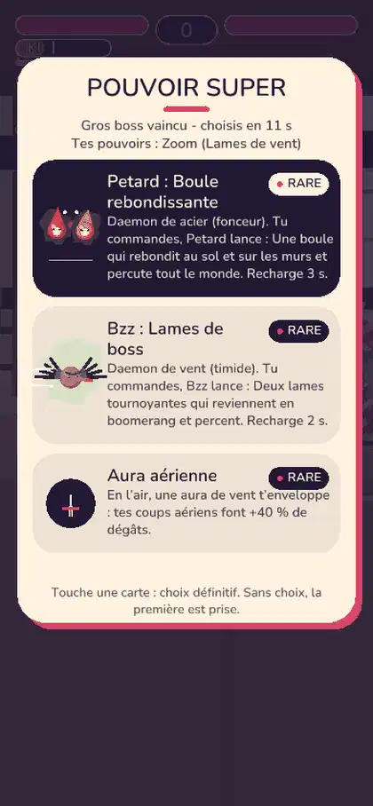
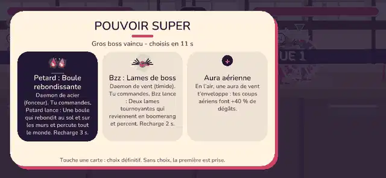

Captures du vrai moteur (scène AFH_SCREEN=rlchoix, 4 joueurs, tactile). Chaque GIF : le choix qui s'ouvre, puis l'écran après l'appui. Les commandes de combat flottantes sont masquees pendant le choix (elles recouvraient les cartes).




| Point | Valeur |
|---|---|
| Propositions | 3 par joueur, personnelles, tirage (graine, place, étage, palier), sans doublon avec ses pouvoirs |
| Palier | Étage de boss (5, 10...) = cool ; sinon standard |
| Minuterie | 10 s, clôture des que tous les humains presents ont choisi, puis 0,67 s |
| Par defaut | Première proposition (absent, IA, place libre, minuterie) |
| Arrivee / départ pendant le choix | L'arrivant a ses propres cartes ; un départ garde son choix ou prend le defaut |
| Garde | Dans le kit de départ (socle : Poing, Pied, Saut, Garde) |
| Catalogue | 29 standards, 19 cool (voir src/rl_powers.rs) |
Decisions a prendre : voir les cartes (cards/roguelite_choix.json).